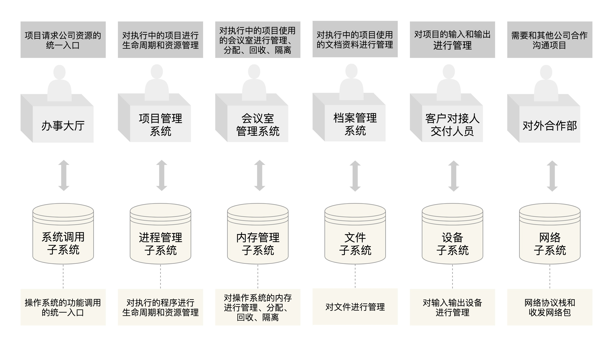
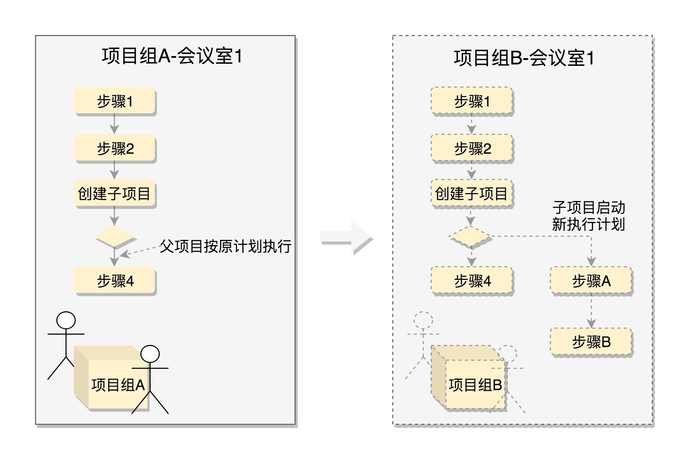

Linux概览
一、Linux下的子系统
Linux源码学习带注释

二、shell
什么是shell
command-language interrupt 命令语言解释器，是用户与Linux内核之间的接口程序，拥有自己内建的shell命令集。
常见的shell
shell，bash，zsh
shell是怎么工做的
shell得到输入会先查看是否是内建程序(pwd)，不是的话检查是否是一个应用程序(比如cp)。如果是一个命令或者是一个执行文件，命令或者可执行文件将被分解为系统调用并传递给linux内核执行。
什么是.barsh/.zshrc/.xshrc，常见的作用是什么
.bashrc是bash每次开启时会运行的文件。.zshrc对应zsh。我们可以通过编辑.bashrc可以完成很多事
设置快捷键
1 | alias cls='clear' |
使用函数
1 | md () { |
执行脚本
cheat1
owsay -f $(ls /usr/share/cowsay/cows | shuf -n 1 | cut -d. -f1) $(whatis $(ls /bin) 2> /dev/null | shuf -n 1)
常用的shell

三、系统调用

fork

用于创建进程，Linux中进程需要有一个存在的进程通过调用fork产生。
brk,mmap
都是内存的分配，当分配内存小时使用brk，分配整块内存时使用mmap
open,close,create,lseek,read,write
文件操作相关的系统调用
通信
项目异常处理与信号处理:
信号：
Ctrl+C
非法访问内存
硬件故障
kill 函数将一个用户信号发给另一个进程 SIGKILL SIGSTOP
信号处理：
sigaction 系统调用：注册一个信号处理函数
进程通信：
1、消息队列（内核）适合数据小msgget、msgsnd，msgrcv
2、数据大 （共享内存） shmget shmat（映射内存）
数据一致性，排他访问：信号量Semaphore
sem_wait（有则等待，无则占据），sem_post（释放信号量）
主机间通信：
网络：
网络协议（TCP/IP网络协议栈）（内核实现）
套接字Socket：
双方都要建立Socket
可以通过系统调用建立一个Socket，Socket是一个文件，通过读写函数进行通通信
Glibc:
Linux下的开源标准C库，封装了操作系统提供的系统服务，系统调用的封装：
| Glib | syscall | |
|---|---|---|
| 1 | open | sys_open |
| 2 | printf | sys_open,sys_mmap,sys_write,sys_close |
| 3 | malloc,calloc,free | sys_brk |